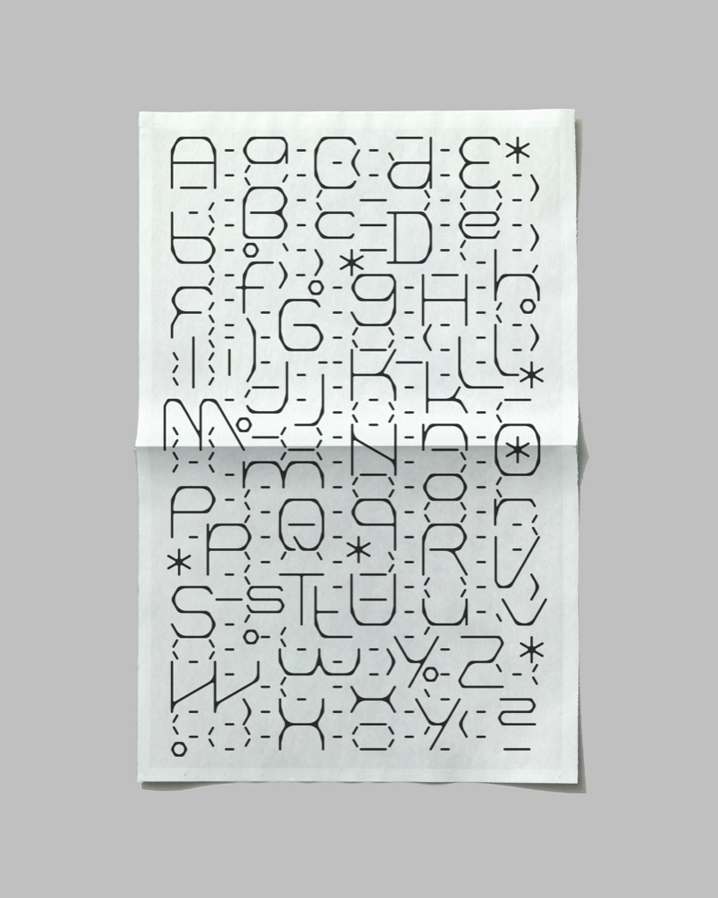
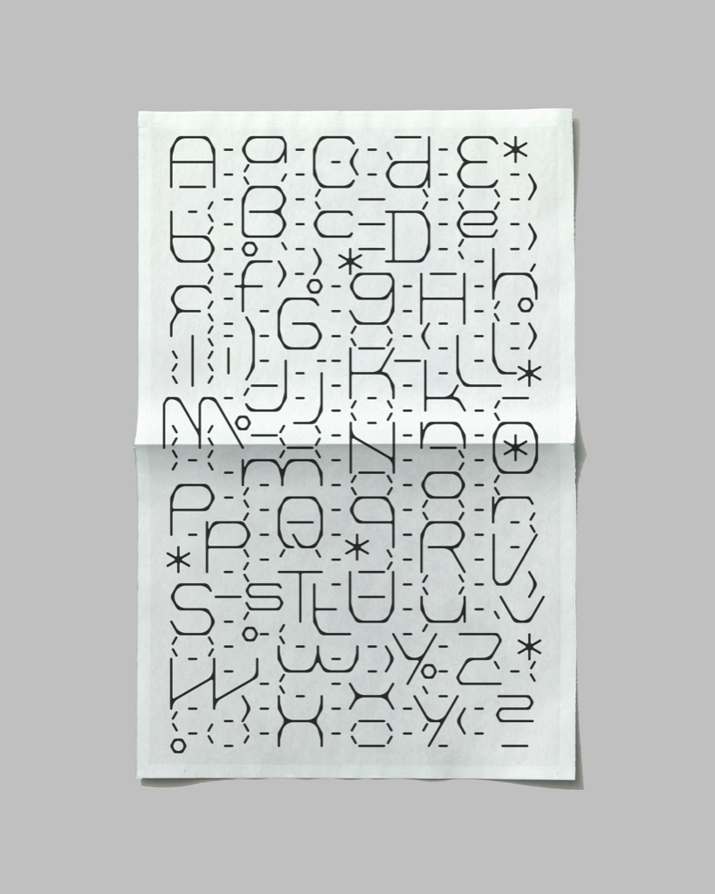

- Typeface not for Typing
- 2022-01
-
- Diese Sammlung basiert auf einer Schrift, die nicht zur herkömmlichen Setzung gedacht ist. Es erforscht die zugrunde liegenden Geometrien der Schrift durch verschiedene visuelle Ausdrucksformen.
- This collection is based on a typeface that is not supposed to be for typing. It further explores the typeface’s underlying geometries through various visual expressions.
-
- Digitale Kompositionen
- Digital compositions
-
 
